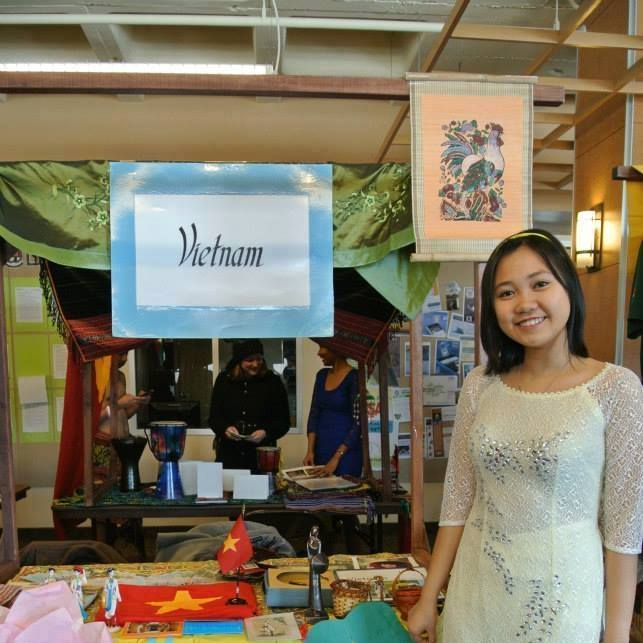

Find out why you should hire Linh Nguyen Le in 5 minutes!
I am a student majoring in Computer Science and Statistics at Luther College, Decorah, IA. I am really interested in Data Science, Data Analysis, Software and Hardware Development
Some of the reasons why I am a competitive candidate for your positions are:
I am an active and fast learner. I learn new knowledge and skills that the job require. I have done self-study for actuary tests and some programming languages such as Java, C, PHP, etc
I have a good ability to focus. I can focus for a long time to finish assigned tasks.
Two of my biggest strengths are restoretive and analytics. Studying Maths and Computer Science has helped me consolidate and empowered these skills. I also have chances to use and improve these skills constantly with my work-study and my student-organization as a leader.
Responsibility and good working ethics are work that people use to describe me. For me, being responsible with what I have committed to is one of the most important rules that I set for myself.
Last but not least, I am a smiley face. I smile all the time because I believe that seeing someone smile will help you have a better day. I volunteer to be that 'someone'